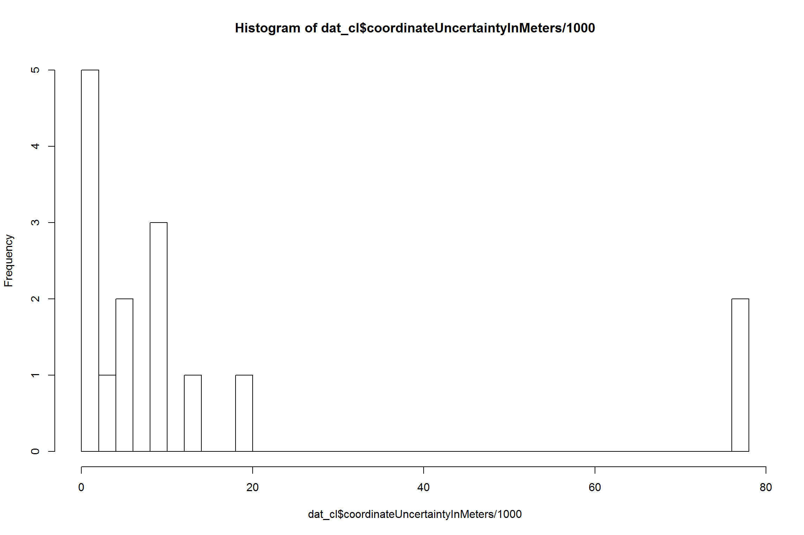
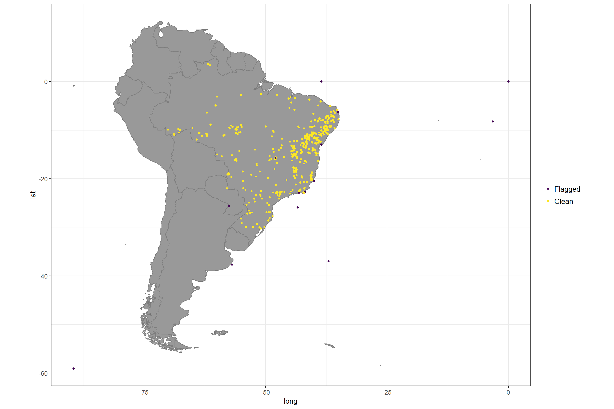
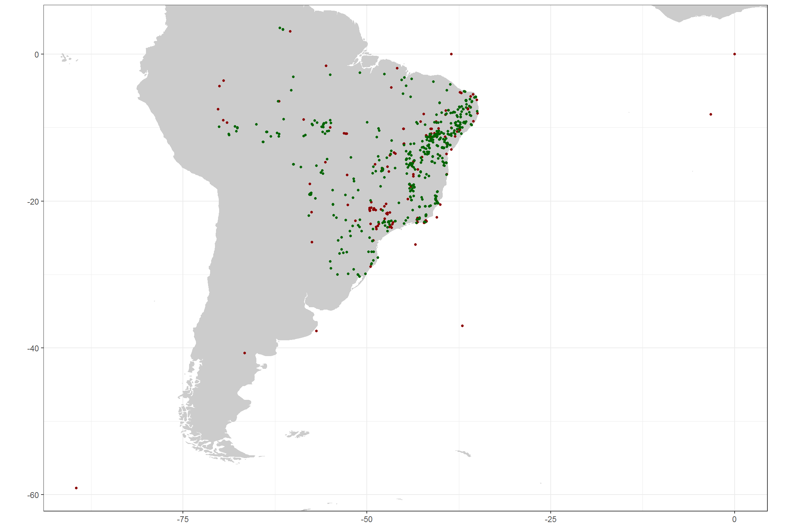
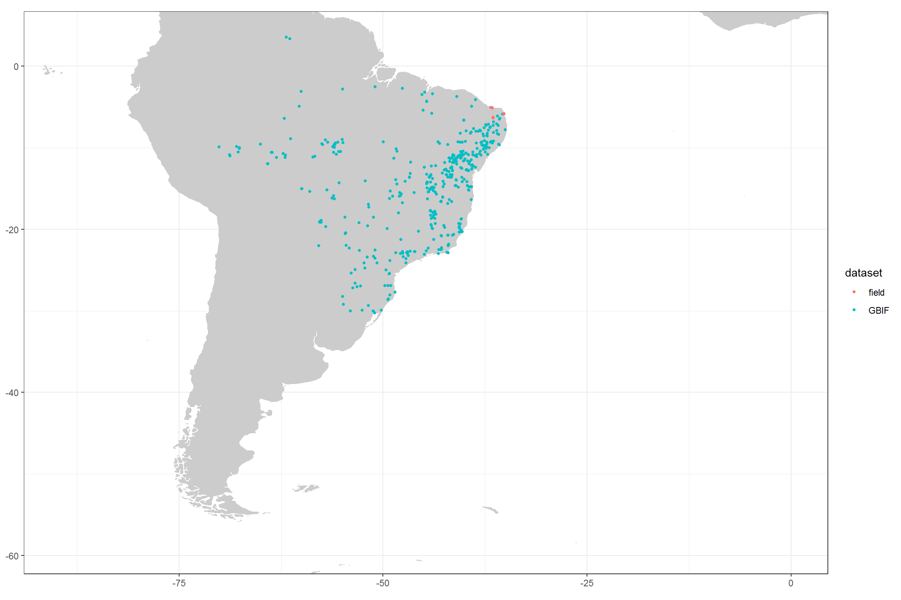

Data cleaning
Library setup
You will need the following R libraries for this exercise, just copy the code chunk into you R console to load them. You might need to install some of them separately.
library(tidyverse)
library(rgbif)
library(sp)
library(countrycode)
library(CoordinateCleaner)Solutions
The following suggestion for data cleaning and are not comprehensive or a one-size-fits it all solution. You might want to change, omit, or add steps depending on your research question and scale. Remember: What is ‘good data’ depends completely on the type of downstream analyses and their spatial scale. The cleaning here might be a good starting point for continental scale biogeographic analyses.
1. Load your occurrence data downloaded from GBIF
GBIF provides a large amount of information for each record, leading to a huge data.frame with many columns. However some of this information is only available for few records, and thus for most analyses most of the columns can be dropped. Here, we will only retain information to identify the record and information that is important for cleaning up the data.
dat <- read_csv("inst/gbif_occurrences.csv", guess_max = 10000)
names(dat) #a lot of columns
dat <- dat %>% select(species, decimalLongitude, decimalLatitude, countryCode,
individualCount, gbifID, family, taxonRank, coordinateUncertaintyInMeters,
year, basisOfRecord, institutionCode, datasetName) # you might find other ones useful depending on your downstream analyses
## [1] "name"
## [2] "key"
## [3] "decimalLatitude"
## [4] "decimalLongitude"
## [5] "issues"
## [6] "datasetKey"
## [7] "publishingOrgKey"
## [8] "networkKeys"
## [9] "installationKey"
## [10] "publishingCountry"
## [11] "protocol"
## [12] "lastCrawled"
## [13] "lastParsed"
## [14] "crawlId"
## [15] "extensions"
## [16] "basisOfRecord"
## [17] "taxonKey"
## [18] "kingdomKey"
## [19] "phylumKey"
## [20] "classKey"
## [21] "orderKey"
## [22] "familyKey"
## [23] "genusKey"
## [24] "speciesKey"
## [25] "scientificName"
## [26] "kingdom"
## [27] "phylum"
## [28] "order"
## [29] "family"
## [30] "genus"
## [31] "species"
## [32] "genericName"
## [33] "specificEpithet"
## [34] "taxonRank"
## [35] "dateIdentified"
## [36] "stateProvince"
## [37] "year"
## [38] "month"
## [39] "day"
## [40] "eventDate"
## [41] "lastInterpreted"
## [42] "license"
## [43] "identifiers"
## [44] "facts"
## [45] "relations"
## [46] "geodeticDatum"
## [47] "class"
## [48] "countryCode"
## [49] "country"
## [50] "rightsHolder"
## [51] "recordNumber"
## [52] "identifier"
## [53] "datasetName"
## [54] "municipality"
## [55] "language"
## [56] "gbifID"
## [57] "collectionCode"
## [58] "occurrenceID"
## [59] "type"
## [60] "catalogNumber"
## [61] "recordedBy"
## [62] "institutionCode"
## [63] "ownerInstitutionCode"
## [64] "occurrenceRemarks"
## [65] "identifiedBy"
## [66] "modified"
## [67] "locality"
## [68] "http...unknown.org.http_..rs.tdwg.org.dwc.terms.Identification"
## [69] "otherCatalogNumbers"
## [70] "http...unknown.org.http_..rs.gbif.org.terms.1.0.Multimedia"
## [71] "elevation"
## [72] "elevationAccuracy"
## [73] "coordinateUncertaintyInMeters"
## [74] "references"
## [75] "verbatimEventDate"
## [76] "verbatimLocality"
## [77] "taxonID"
## [78] "http...unknown.org.occurrenceDetails"
## [79] "rights"
## [80] "eventTime"
## [81] "identificationID"
## [82] "continent"
## [83] "fieldNotes"
## [84] "habitat"
## [85] "institutionID"
## [86] "endDayOfYear"
## [87] "county"
## [88] "preparations"
## [89] "startDayOfYear"
## [90] "verbatimElevation"
## [91] "collectionID"
## [92] "individualCount"
## [93] "higherGeography"
## [94] "http...unknown.org.http_..rs.tdwg.org.dwc.terms.ResourceRelationship"
## [95] "higherClassification"
## [96] "nomenclaturalStatus"
## [97] "nomenclaturalCode"
## [98] "bibliographicCitation"
## [99] "eventRemarks"
## [100] "fieldNumber"
## [101] "georeferenceProtocol"
## [102] "typeStatus"
## [103] "identificationRemarks"
## [104] "georeferenceSources"
## [105] "taxonomicStatus"
## [106] "http...unknown.org.http_..rs.tdwg.org.dwc.terms.MeasurementOrFact"
## [107] "acceptedNameUsageID"
## [108] "http...unknown.org.http_..rs.gbif.org.terms.1.0.Description"
## [109] "datasetID"
## [110] "verbatimTaxonRank"
## [111] "organismID"
## [112] "accessRights"
## [113] "verbatimCoordinateSystem"
## [114] "georeferencedDate"
## [115] "establishmentMeans"
## [116] "previousIdentifications"
## [117] "typifiedName"
## [118] "http...unknown.org.http_..rs.gbif.org.terms.1.0.Identifier"
## [119] "waterBody"
## [120] "locationID"
## [121] "eventID"
## [122] "taxonRemarks"
## [123] "dynamicProperties"2. Combine with additional data
# read the additional data
adds <- read_delim("inst/speciesLink_all_28104_20170516054359.txt", delim = "\t")
# select relevant columns and name them similar to the GBIF data
adds <- adds %>% mutate(species = paste(adds$genus, adds$species, sep = " ")) %>%
dplyr::select(species, decimalLongitude = longitude, decimalLatitude = latitude,
countryCode = country, dataset = collectioncode, year = yearcollected,
family) %>% mutate(countryCode = countrycode(countryCode, origin = "country.name",
destination = "iso3c"))
dat <- bind_rows(dat, adds)3. Visualize the coordinates on a map
Visualizing the data on a map can be extremely helpful to understand potential problems and to identify problematic records.
wm <- borders("world", colour = "gray50", fill = "gray50")
ggplot() + wm + geom_point(data = dat, aes(x = decimalLongitude, y = decimalLatitude),
colour = "darkblue", size = 0.5) + coord_fixed() + xlim(min(dat$decimalLongitude,
na.rm = T), max(dat$decimalLongitude, na.rm = T)) + ylim(min(dat$decimalLatitude,
na.rm = T), max(dat$decimalLatitude, na.rm = T))4. Clean the coordinates based on available meta-data
As you cans see there are a some unexpected occurrence locations, outside the current distribution range. We will find out the reasons for this in a minute. In this specific case we could relatively easily get rid of a large number of problematic records based on prior knowledge (we are only interested in records in South America) but we usually do not have this kind of knowledge when dealing with larger datasets, so we will try to get rid of those records in different ways. GBIF data often contain a good number of meta-data that can help to locate problems. First we’ll remove data without coordinates, coordinates with very low precision and the unsuitable data sources. We will remove all records with a precision below 100km as this represent the grain size of many macro-ecological analyses, but the number is somewhat arbitrary and you best chose it based on your downstream analyses. We also exclude fossils as we are interested in recent distributions and records of unknown source, as we might deem them not reliable enough.
# remove records without coordinates
dat_cl <- dat %>% filter(!is.na(decimalLongitude)) %>% filter(!is.na(decimalLatitude))
# remove records with low coordinate precision
hist(dat_cl$coordinateUncertaintyInMeters/1000, breaks = 30)
dat_cl <- dat_cl %>% filter(coordinateUncertaintyInMeters/1000 <= 100 | is.na(coordinateUncertaintyInMeters))
# remove unsuitable data sources, especially fossils
table(dat$basisOfRecord)
dat_cl <- filter(dat_cl, basisOfRecord == "HUMAN_OBSERVATION" | basisOfRecord ==
"OBSERVATION" | basisOfRecord == "PRESERVED_SPECIMEN")
##
## HUMAN_OBSERVATION OBSERVATION PRESERVED_SPECIMEN
## 13 1 1694
## UNKNOWN
## 26In the next step we will remove records with suspicious individual counts. GBIF includes few records of absence (individual count = 0) and suspiciously high occurrence counts, which might indicate inappropriate data or data entry problems.
# Individual count
table(dat_cl$individualCount)
dat_cl <- dat_cl %>% filter(individualCount > 0 | is.na(individualCount)) %>%
filter(individualCount < 99 | is.na(individualCount)) # high counts are not a problem
##
## 0 1 3 4 5 8
## 22 25 1 2 2 1We might also want to exclude very old records, as they are more likely to be unreliable. For instance, records from before the second world war are often very imprecise, especially if they were geo-referenced based on political entities. Additionally old records might be likely from areas where species went extinct (for example due to land-use change).
# Age of records
table(dat_cl$year)
dat_cl <- dat_cl %>% filter(year > 1945) # remove records from before second world war
##
## 1823 1831 1837 1838 1840 1852 1882 1891 1894 1900 1904 1911 1914 1915 1923
## 1 1 2 1 1 1 1 1 1 13 1 1 1 1 1
## 1924 1929 1930 1932 1933 1934 1935 1936 1937 1939 1943 1944 1946 1947 1949
## 1 2 8 1 19 2 4 2 3 15 2 4 4 2 3
## 1950 1951 1952 1954 1955 1957 1958 1959 1960 1961 1962 1963 1964 1965 1966
## 1 1 4 1 1 3 2 6 1 2 1 17 10 5 10
## 1967 1968 1969 1970 1971 1972 1973 1974 1975 1976 1977 1978 1979 1980 1981
## 6 11 1 1 6 6 10 13 12 8 9 5 10 27 17
## 1982 1983 1984 1985 1986 1987 1988 1989 1990 1991 1992 1993 1994 1995 1996
## 7 23 40 10 19 15 10 18 31 31 14 41 59 53 34
## 1997 1998 1999 2000 2001 2002 2003 2004 2005 2006 2007 2008 2009 2010 2011
## 20 33 28 41 32 42 29 23 29 25 62 41 28 46 66
## 2012 2013 2014 2015 2016 2017 2018
## 47 17 37 29 96 89 7On top of the geographic cleaning, we also want to make sure to only include species level records and records from the right taxon. Taxonomic problems such as spelling mistakes in the names or synonyms can be a severe problem. We’ll not treat taxonomic cleaning here, but check out the taxize R package or the taxonomic name resolution service for that.
table(dat_cl$family) #that looks good
dat_cl <- dat_cl %>% filter(family == "Malvaceae")
table(dat_cl$taxonRank) # We will only include records identified to species level
dat_cl <- dat_cl %>% filter(taxonRank == "SPECIES")
##
## Malvaceae
## 1488
##
## GENUS SPECIES
## 233 1255We excluded almost round((nrow(dat) - nrow(dat_cl)) / nrow(dat) * 100, 0) of the initial data points based on metadata! Most of them due to incomplete identification.
- Apply automated flagging to identify potentially problematic records To identify additional problems we will run the automatic flagging algorithm of the CoordinateCleaner package. The
clean_coordinatesfunction is a wrapper around a large set of automated cleaning steps to flag errors that are common to biological collections, including: sea coordinates, zero coordinates, coordinate - country mismatches, coordinates assigned to country and province centroids, coordinates within city areas, outlier coordinates and coordinates assigned to biodiversity institutions. You can switch on each test individually using logical flags, modify the sensitivity of most individual tests using the “.rad” arguments, and provide custom gazetteers using the “.ref” arguments. See?clean_coordinatesfor help. To use the country - coordinate mismatch test we need to convert the country from ISO2 to ISO3 format. Since we work in a coastal area, we use a buffered reference, to avoid flagging records close to the sea.
# convert country code from ISO2c to ISO3c
dat_cl$countryCode <- countrycode(dat_cl$countryCode, origin = "iso2c", destination = "iso3c")
# flag problems
dat_cl <- data.frame(dat_cl)
flags <- clean_coordinates(x = dat_cl, lon = "decimalLongitude", lat = "decimalLatitude",
countries = "countryCode", species = "species", tests = c("capitals", "centroids",
"equal", "gbif", "institutions", "zeros", "countries", "seas"), seas_ref = buffland) # most test are on by defaultHere an additional sum(flags$.summary) records were flagged! A look at the test summary and plot reveal the major issues.
summary(flags)
plot(flags, lon = "decimalLongitude", lat = "decimalLatitude")
## .val .equ .zer .cap .cen .sea .con .gbf
## 0 519 519 9 518 6 544 0
## .inst .summary
## 2 555After this inspection we can safely remove the flagged records for this tutorial
dat_cl <- dat_cl[flags$.summary, ]6. Check for problems with coordinate precision
Some problems, in particular certain kinds of imprecisions, cannot be identified on the record level. For instance, many records are based on gridded sampling schemes or atlas projects, but are not easily identifiable as such. To identify these kind of problems CoordinateCleaner includes dataset level tests, which search for periodicity in the decimals of occurrence records, and can indicate, if a substantial portion of the coordinates in a dataset have been subject to rounding or are nodes of a raster scheme. You can run this test either on the entire dataset, or on individual contributing dataset, e.g. all records from GBIF, using the clean_dataset function. See here for more details.
# For the total dataset
dat_cl$datasettotal <- "TOTAL"
## Run dataset level test
clean_dataset(dat_cl, ds = "datasettotal", lon = "decimalLongitude", lat = "decimalLatitude")

## binomial.pvalue perc.difference pass.ddmm dataset lon.n.outliers
## TOTAL 0.9522 -0.098 TRUE TOTAL 0
## lon.n.regular.distance lon.flag lat.n.outliers
## TOTAL 0 TRUE 2
## lat.n.regular.distance lat.flag summary
## TOTAL 0 TRUE TRUEThere is no evidence for periodicity in the entire dataset or its three biggest contributing datasets. Great!
7. Visualize the difference between the uncleaned and cleaned dataset (plot)
wm <- borders("world", colour = "gray50", fill = "gray50")
ggplot() + coord_fixed() + wm + geom_point(data = dat, aes(x = decimalLongitude,
y = decimalLatitude), colour = "darkred", size = 1) + geom_point(data = dat_cl,
aes(x = decimalLongitude, y = decimalLatitude), colour = "darkgreen", size = 1) +
coord_fixed() + xlim(min(dat$decimalLongitude), max(dat$decimalLongitude)) +
ylim(min(dat$decimalLatitude), max(dat$decimalLatitude))
8. Write to disk
write_csv(dat_cl, "inst/occurrence_records_clean.csv")